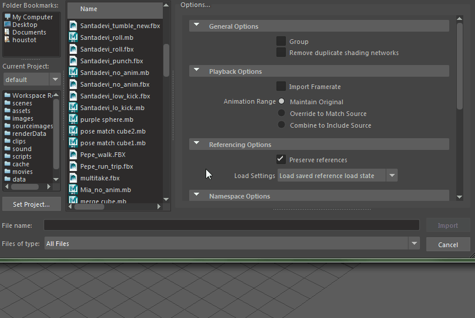

本部分介绍如何使用 Maya FBX 插件导入文件：
要导入 FBX 文件，请执行以下操作：
- 启动 Maya。
- 选择文件 > 导入(File > Import)。
- 从“文件导入”(File Import)对话框中，找到要导入的 FBX 文件。
- 从“文件类型”(File of Type)菜单中，选择 FBX 文件扩展名。
注： 如果 FBX 文件扩展名未显示在
“文件类型”(File of Type)菜单中，则在 Maya
插件管理器中激活
fbxmaya.mll。
- 如果在 Maya“导入”(Import)对话框右侧看不到“FBX 导入”(FBX Import)选项，请向下滚动。

- 设置要使用的导入选项，或者从“预设”(Presets)菜单选择一个预设。“Autodesk Media & Entertainment”预设包含适用于一般动画工作流的最佳平衡选项。
提示： 如果要使用“Maya 到 MotionBuilder，再返回到 Maya”工作流，请使用“Autodesk MotionBuilder”预设。
有关 Autodesk 预设以及适用于您的导入选项的信息，请参见 FBX 导入选项中的“导入预设”。
- 单击 Maya“导入”(Import)对话框中的“导入”(Import)。
注： 要取消导入过程，请按 ESC 键。
- 如果导入过程中出现转化或错误，则警告管理器会在导入过程结束时报告这些问题。有关“警告管理器”(Warning Manager)的信息，请参见 FBX 导入选项主题中的“显示/隐藏警告管理器”(Show/Hide Warning Manager)。
注： “错误”和“警告”之间存在差别。当出现异常情况时，插件会报告错误。如果插件报告错误，则表示错误的后果未知。当插件对源数据应用转化以使其转化为目标应用程序可以读取的格式时，将会出现警告提醒用户。